Efectividad con la fuerza de la naturaleza
Salud, bienestar y cuidado natural desde Alemania
En Dr. Ehrlichs combinamos tradición, conocimiento natural y calidad alemana para ofrecer productos orientados al cuidado de la piel madura, el bienestar corporal y la vitalidad.
Ver productosCosmetología Natural
Dr. EhrlichsCalidad de Alemania
Conocimientos de curación natural para la tercera generación
Tradición desde 1958: cuidado de la salud natural desde Allgäu, Alemania
En el Catálogo Sanitario del Dr. Ehrlich, llevamos tres generaciones combinando el conocimiento curativo tradicional con el poder de la naturaleza.
Desde la cuidadosa selección de ingredientes naturales hasta la elaboración artesanal de cada producto, buscamos ofrecer una calidad basada en confianza, transparencia y responsabilidad.
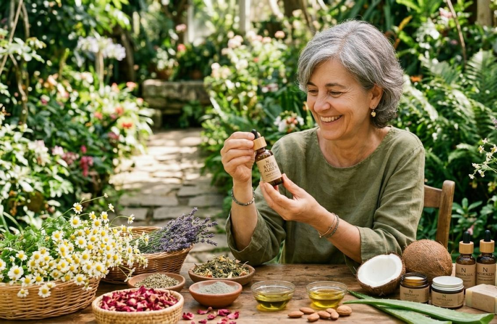
Cosmetología
Natural
La naturaleza es nuestra mayor aliada: seleccionamos ingredientes y extractos vegetales de alta eficacia para potenciar el cuidado diario y acompañar una rutina de bienestar.
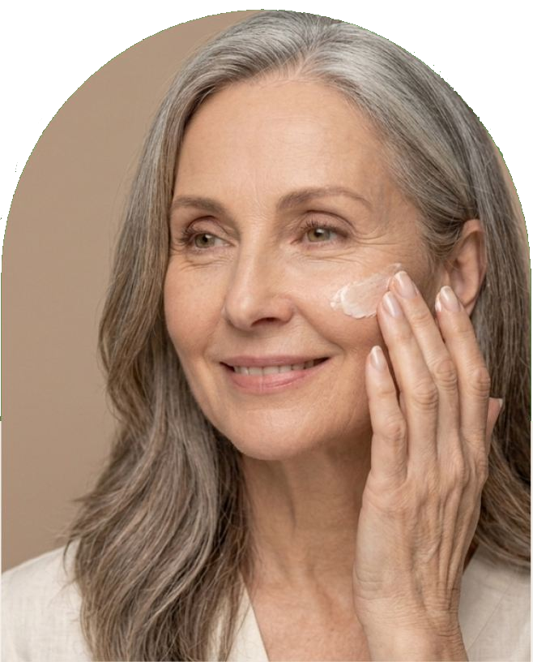
Cuidado Facial
Cuidado natural para rostro y escote
El cuidado de la piel es importante a cualquier edad. La piel necesita atención para mantener su elasticidad y su equilibrio natural de hidratación, especialmente durante los meses más fríos y frente a factores ambientales.
Bienestar corporal
Cuidado de las articulaciones y músculos
Productos pensados para masajes, relajación, sensación de calor y cuidado corporal cotidiano.
Catálogo
Productos destacados
Muestra informativa de productos. Esta página no funciona como tienda online.
Cuidado Facial
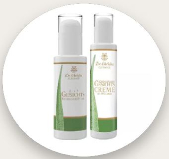
REF. 694 · 125ml
Kit ‘Elegance’ del Dr. Ehrlich
Combina un limpiador facial y crema hidratante 2 en 1 para limpieza profunda de poros con una crema facial antiedad revitalizante con ácido hialurónico.
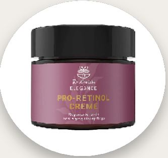
REF. 457 · 100ml
Crema Elegance Pro-Retinol
Ayuda a atenuar los signos del envejecimiento. Con uso regular, refina y reafirma visiblemente el cutis, aportando una sensación suave y calmante.
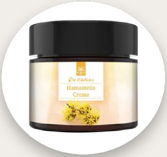
REF. 650 · 100ml
Crema de hamamelis
Desarrollada para pieles secas, irritadas o sensibles. Su fórmula hidrata la piel estresada y ayuda a mantener su equilibrio natural.
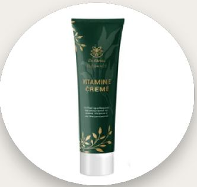
REF. 335 · 100ml
Crema de vitamina E y triple fórmula de protección
Fórmula con vitamina E pura y aceite de germen de trigo, desarrollada para las necesidades especiales de la piel madura.
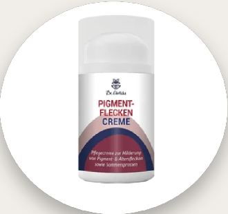
REF. 486 · 50ml
Crema para manchas pigmentarias
Desarrollada para el cuidado de manchas de la edad y marcas de pigmentación. Su fórmula ayuda a mejorar la apariencia del tono de la piel.
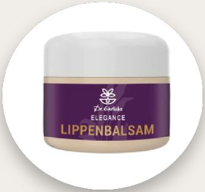
REF. 012 · 15ml
Bálsamo labial ‘Elegance’
Elaborado con aceites y mantecas vegetales de alta calidad. Hidrata, protege y ayuda a restaurar la flexibilidad de los labios agrietados.
Cuidado de articulaciones y músculos
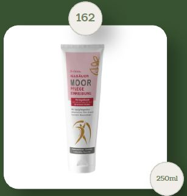
REF. 162 · 250ml
Crema nutritiva Allgäu Moor
Contiene extracto de turba y aceites esenciales de eucalipto, mentol, alcanfor e incienso. Produce una agradable sensación de calor.
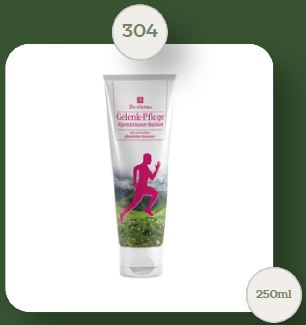
REF. 304 · 250ml
Bálsamo de hierbas alpinas
Bálsamo nutritivo con extractos de hierbas alpinas. Aporta una sensación relajante en rodillas, articulaciones y hombros.
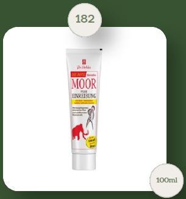
REF. 182 · 100ml
Bálsamo Mammuthus Moor
Fórmula orientada a una sensación calorífica intensa, ideal para masajes en espalda, cuello, hombros, rodillas y articulaciones.
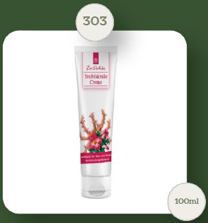
REF. 303 · 100ml
Crema Garra del Diablo
Producto para masaje corporal con extracto de garra del diablo. Aporta sensación de flexibilidad, suavidad y bienestar.
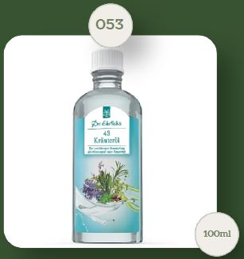
REF. 053 · 100ml
Aceite de 43 hierbas
Mezcla de aceites esenciales de 43 hierbas. Puede utilizarse diluido para lavados, exfoliaciones, masajes o baños relajantes.
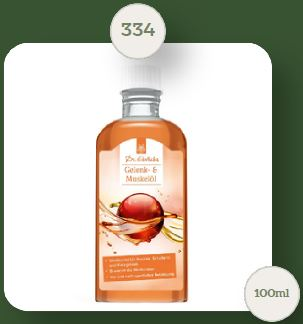
REF. 334 · 100ml
Aceite para músculos
Aceite de masaje para el cuidado de músculos y articulaciones antes o después de la actividad física.
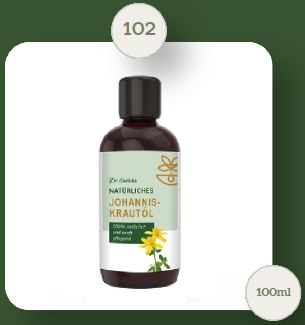
REF. 102 · 100ml
Aceite de hipérico
Aceite natural utilizado externamente para el cuidado de la piel y para acompañar rutinas de bienestar corporal.
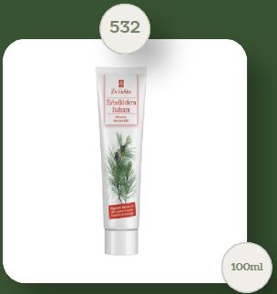
REF. 532 · 100ml
Bálsamo de pino suizo
Bálsamo suave y calmante para masaje corporal. Especialmente adecuado para cuello, hombros y espalda.